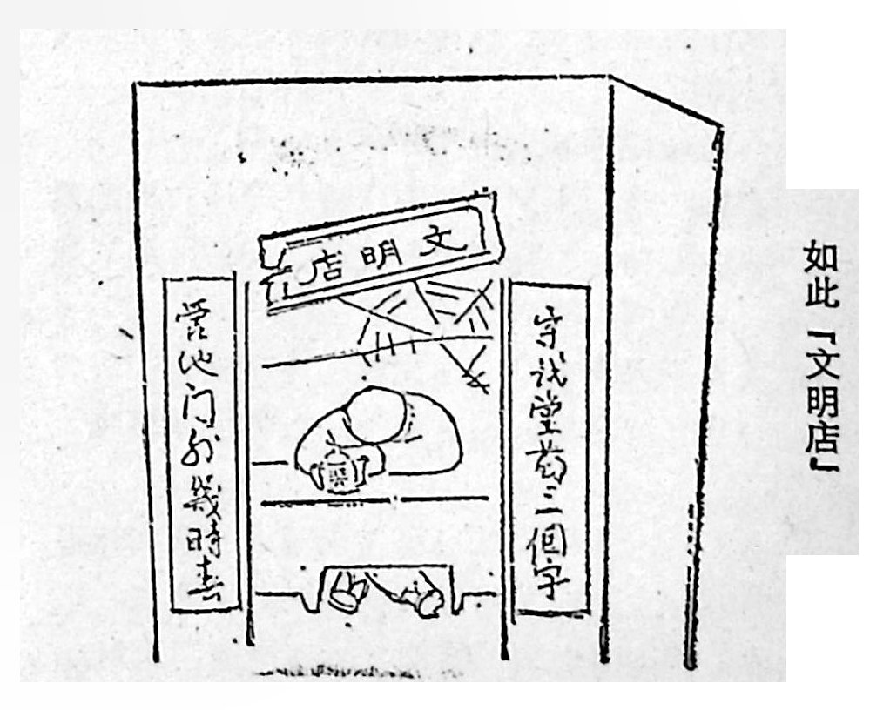

佚名 《人事》1990年第1期（总第52期），第17页
如此“文明店”
Some “Civilized Shop”
- Text in the drawing
- 文明店 / 管他门前几时春 / 守我堂前三个字（对联，手写，读法不确定）
Civilized Shop / couplet on the door posts (hand-lettered; reading uncertain) - Description
- Under a crooked “civilized shop” signboard hung with cobwebs, the clerk sleeps slumped over a teapot on the counter.
- Note
- “Civilized units” (文明单位) and “civilized shops” were titles awarded in the campaigns for “socialist spiritual civilization”; the plaque is all that is civilized here.
- Artist
- Unattributed 佚名
- Published in
- 《人事》1990年第1期（总第52期）, p. 17
- Themes
- Formalism

Cite
Unattributed, “如此“文明店”” [Some “Civilized Shop”], Renshi (Personnel) 《人事》, 1990, no. 1, p. 17.